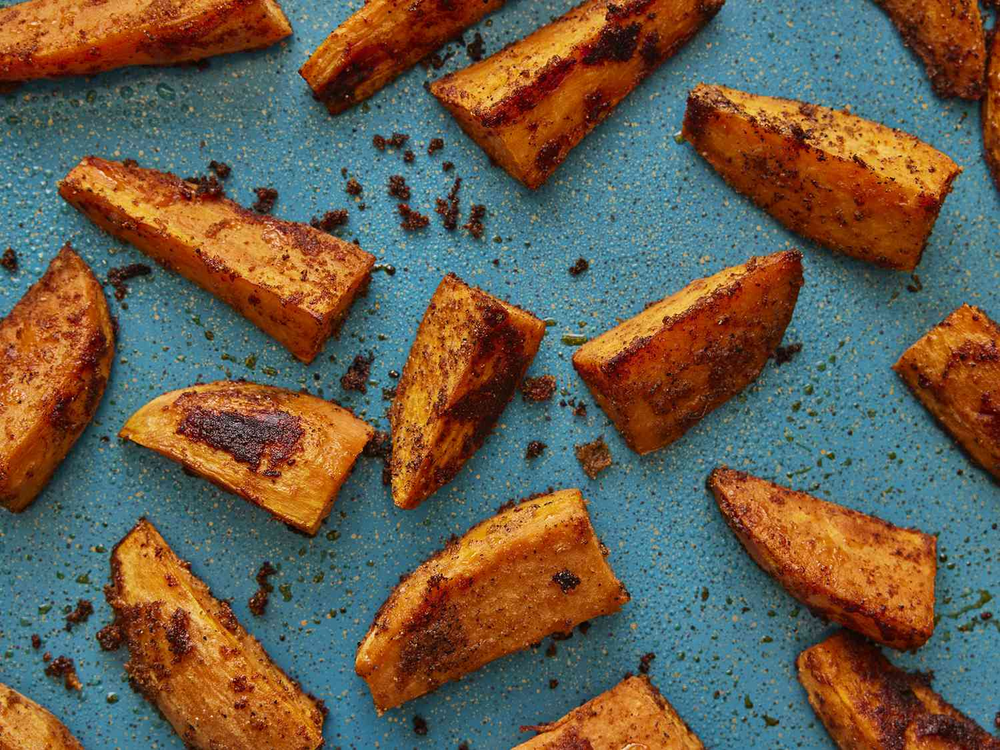

Home
Sweet Potato Fries

Description
Making crispy baked sweet potato fries is surprisingly easy. You'll come back to this simple and delicious recipe again and again.
Ingredients
- 2 large sweet potatoes
- 3 tablespoons soybean oil (often labeled "vegetable oil")
- ½ teaspoon sea salt
- ½ teaspoon freshly ground black pepper
- ¼ teaspoon garlic powder
- ¼ teaspoon paprika
Steps
- Peel the sweet potatoes and cut into wedges.
- Toss the wedges in oil, then season them.
- Bake, turning occasionally, until the fries are tender and golden brown.